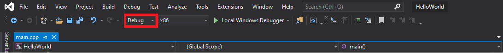

Build configuration (hay còn gọi là build target) là tập hợp các cài đặt project xác định cách IDE của bạn sẽ xây dựng project của bạn.
Khi bạn tạo một project, IDE sẽ mặc định tạo hai build configuration cho bạn: một release configuration và một debug configuration.
Debug configuration được thiết kế để giúp bạn debug chương trình, và bạn sẽ dùng nó để viết chương trình. Configuration này tắt chức năng tối ưu hóa code và thêm các chức năng debug, do vậy chương trình của bạn sẽ lớn hơn và chậm hơn, nhưng dễ debug hơn. Configuration này sẽ được chọn mặc định khi tạo một project.
Release configuration được sử dụng khi bạn muốn cho ra một chương trình hoàn chỉnh sẵn sàng đem ra sử dụng. Configuration này giúp tối ưu hóa kích thước và hiệu suất chương trình, loại bỏ chức năng debug trong chương trình. Do đó, configuration này thường dùng để test sự tối ưu hóa chương trình.
Khi mình dùng hai configuration trên cho chương trình Hello World, nó cho ra file .exe có kích thước 47KB đối với debug và 11KB đối với release. Rõ ràng có sự khác biệt đáng kể, chương trình bản release tối ưu hóa gấp 4 lần debug.
Bạn cũng có thể tự tạo một custom configuration cho riêng mình nhưng mình sẽ không hướng dẫn vì nó thật sự không cần thiết và mình cũng không biết cách làm 😂
Lời khuyên: Sử dụng debug configuration khi viết chương trình, khi bạn muốn xuất bản bản chính chức của chương trình hoặc test sự tối ưu hóa thì mới dùng đến release configuration.
Chuyển đổi giữa các configuration
Có nhiều cách chuyển đổi giữa các configuration, cách dễ nhất là chọn mục Debug ở thanh công cụ phía trên phần viết code.
